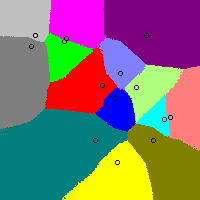

By Warren D. Smith Feb 2007. (Executive Summary)
By using methods unknown to Black in 1948, we can produce a very quick proof of his "singlepeakedness theorem."
THEOREM: If all candidates are points on a line, and each voter has a "singlepeaked" utility function (∧ that increases to a peak, then falls, as we move along the line) then a Condorcet cycle is impossible, hence with honest rank-order votes there is a transitive social ordering and hence a Condorcet winner.
Duncan Black: "On the Rationale of Group Decision-making," Journal of Political Economy 56 (1948) 23-34.
PROOF: If a Condorcet N-cycle existed for some N≥2, then first, we know that N≥3, and second, we can without loss of generality assume N=3 (because if N>3 then draw a "chord" to produce an N-cycle with a smaller value of N≥3).
Due to singlepeakedness, the only votes possible for three candidates A,B,C thus-ordered on the line, are A>B>C, C>B>A, B>A>C, B>C>A (and not A>C>B and C>A>B).
If the number of these votes are respectively w, x, y, and z, then a 3-cycle A>B>C>A occurs if and only if w>x+y+z and w+y+z>x and x+z>w+y (and w,x,y,z≥0 and w+x+y+z=Total#Voters). But this "linear program" has no solution. (That's a standard calculation by anybody who knows the "simplex method." The solution x=w=50%, y=z=0 satisfies or achieves tightness in all the inequalities, but it is impossible to perturb it to genuinely-satisfy all the inequalities.) By a symmetrical argument, C>B>A>C cycles also are impossible. Therefore 3-cycles are impossible; therefore N-cycles are impossible. Q.E.D.
EXTENSION: A candidate located at the "median voter" (or anywhere between the two bimedians, if the number of voters is even) will be an honest-voter Condorcet winner. (More precisely by "median voter" we mean the median peak-location of all the voter utility functions. A voter's "location" is defined to be her utility function's peak.)
PROOF: For such a candidate X, at least half the voters will say X>Y for any Y located to the right of X. (And symmetrically, at least half will say X>Y if Y is to the left of X.) Hence X wins (or at least ties) every pairwise election and hence is the Condorcet winner (or at least tied for it). Q.E.D.
Myth #1 busted: It is not the case that, in two dimensions, a candidate located at the median voter (median in all coordinate-directions simultaneously, that is) will necessarily be a Condorcet winner. Here is a counterexample:
.\.B..|................ ..\...|................ ...\..|................ ....\.|.A......A....... .....\|................ ......|..X............. ......|\............... ......|.\......A....... ------O---------------- ....C.|...\............ ....CC|....\........... ......|.....\.......... ......|......\...D..... ......|.......\........ ......|........\....... ......|.........\...... ......|..........\.....
In this picture, there are two candidates "O" and "X" and 8 voters labeled A, B, C, and D. Here O is located at the origin which is the median x-coordinate and median y-coordinate of all voters. But the voters support X over O by 5 to 3, or by 5 to 4 if you put an additional voter located exactly at O (and if you also want a voter to be located exactly at X, then move one of the A's over on top of the X). This counterexample works if each voter supports the candidate closest in Lp distance, and it doesn't matter what p is; you can use any fixed p≥1. If p=1, i.e. we are talking about "city block distance," then O has greater social utility – if social utility is the negated sum of the distances – than X, but unfortunately X is elected.
About rotating axes:
A somewhat nastier version of the above counterexample is:
2 Candidates: X = (8,8), O = (0,0);
8 Voters:
(-1,-1),
(-2, -2),
(-3, -3),
(4+ε, 4),
(4, 4+ε),
(19, 19),
(-B, 8+ε+B),
(8+ε+B, -B)
where ε>0 is a very small number and B>0
is a very big number.
Optionally:
place an additional 9th voter exactly at O.
Then O is the median among the candidates
in both x-coordinate and y-coordinate,
but X beats O in a majority vote election where voters
prefer candidates closer in L1 distance (or in Lp distance for
any p≥1).
If the axes are rotated by a random angle,
then O is still the median in both axial directions,
with probability 0.9999 (can be made arbitrarily near 1 but not 1 itself).
Also: X always beats O in the election no matter what angle
you rotate the coords and what p≥1, but X is never the x- and y-median
(regardless of the angle).
Also: There is no "2D median" of this point set, where a "2D median" means a point M
such that any line through M that misses the other points in the set
has exactly half of them on each side of it.
Fermat-Weber point: Rob LeGrand notes that perhaps a better generalization of "median" to higher dimensions is the Fermat-Weber point, the point that minimizes the sum of the L2 distances from it to each point. ("Average" can be similarly generalized, minimizing the sum of squared L2 distances.) It always exists (of course) and is unique unless you have an even number of collinear points and the middle two differ. It is also rotationally invariant. [Christopher G. Small: A Survey of Multidimensional Medians. International Statistical Review 58,3 (Dec. 1990) 263-277.] With these coordinates with a 9th voter at O, the Fermat-Weber point is O. Hence this same "nastier" example also demonstrates that a candidate at the unique Fermat-Weber point also can fail to be elected by Condorcet voting methods with Lp-distance-based utilities.
Myth #2 busted: It also is not the case that, in two dimensions with voters who prefer candidates closer to them in L2 (or L1) distance, a Condorcet winner necessarily exists at all. Here is a counterexample for L1 distance:
:::::::::::::*::: :::::A::::::::B:: ::::::::::::::::: ::::::::::::::::: ::::::::::::::::: ::::::::::::::::: ::::*::::::::::*: ::::::::::::::C:: :::::::::::::::::
The three voters are labeled *, the three candidates are A, B, and C, and we get these three votes C>B>A, B>A>C, and A>C>B leading to a Condorcet cycle. (You can make a similar but easier counterexample for ordinary Pythagorean/Euclidean L2 distance using an equilateral triangle, and for L∞ distance by using the L1 picture rotated by 45 degrees.)
Myth #3 busted: Finally, it is not the case (even in one dimension, and even with a centro-symmetric voter-set) that the location of the "median voter" or Condorcet winner is necessarily best in terms of maximizing social utility (if utility is a decreasing function of distance). For example, here (with two candidates A and B, and 5 voters shown as X plus one extra voter located directly on top of A)
+++X+X+++++++++++++++++++++++++++++A+++++++++++++++++++++++++++++X+X+B+++A is the Condorcet winner and median voter. But with utility=1/(7+distance) it is B who is the better winner for society.
One was proved by [Otto A. Davis, Morris H. DeGroot, Melvin J. Hinich: Social Preference Orderings and Majority Rule, Econometrica 40,1 (Jan 1972) 147-157] and we now shall produce an even-more-general theorem which improves upon theirs.
Define the "DDH-median" of a multidimensional N-point set S, N odd, to be a point M in S such that every hyperplane through M which misses the other points, splits them into two equal-cardinality halves.
Note: If the number of dimensions exceeds 1, then a DDH-median does not necessarily exist. For example, the 2D point set we used to bust myth #1 above, has no DDH-median. However, for centrosymmetric point sets with odd cardinality, a DDH-median always exists, and indeed the set will even exhibit the stronger property in part (c) of the theorem below.
THEOREM: If all candidates and voters are points in d-dimensional space, and each voter has a distance-decreasing utility function, where the "distance" function can be any Lp distance (1≤p≤∞) or even more generally any distance function whatever whose distance=K contours are a sequence of convex bodies where increasing K implies body-containment, and all voters give an honest rank-ordering as their vote, then
PROOF:
(a)
We need to prove the DDH-median M is preferred over any other candidate X by a voter-majority.
Draw the hyperplane H through M which is perpendicular to the line XM.
Now starting from any voter V located on the other side of H from X,
expand the constant-distance-from-V contour until it hits M.
Suppose V is on the other side of this hyperplane from X.
Then at this moment, because it is a convex body, the contour cannot enclose X (indeed it
does not enclose any point on the ray starting from M and containing X).
Therefore X is further
from V than M using voter-V's distance notion and V prefers M over X.
Then because M is a DDH-median at least half the voters, plus
the voter at M itself, prefer M over X – a majority.
(b)
This was proven by D, D, and H.
(c)
Compare C with some opponent A.
We claim that there are two possibilities: either both V and V' prefer C over A,
or
one prefers C>A and the other A>C.
The claim is readily confirmed; and it
implies the theorem since the voter at M itself prefers C>A.
Q.E.D.
The following pictures may be helpful in understanding L1 distance. For the picture on the left, there are two candidates (small circles) and the blue pixels denote the region where the blue candidate wins an election for voters (using simple majority vote) distributed centrosymmetrically about that pixel. This is (as the theorem part c indicates) the same thing as the Voronoi diagram based on L1 distance. For the picture second from left, the blue pixels are the region where the blue candidate, for voters distributed 2D-normally with σx=σy=50 and using Utility=(17142+Q²)-1/2, where Q is the L1 distance, is socially best (maximizes utility sum). Note that the two pictures differ, indicating that voting can deliver non-optimal winners. (Each picture is 200x200 pixels.)
The right two pictures are the L² Voronoi diagram and range voting winner respectively, for a set of 14 random points and σx=σy=40. (They differ but are almost indistinguishable, indicating that range voting in this case is almost optimal.)
MORAL: For L² distance, Condorcet voting methods always yield the L² Voronoi diagram for voters centrosymmetrically distributed about each pixel (by part b of theorem). Also (as you can prove using facts about convolutions) this always is the same as the socially-best-winner picture. Thus, with utilities based on L² distance, for honest voters distributed centrosymmetrically, Condorcet voting methods are always optimum and in particular are superior to range voting.
But with utilities based on L1 distance – which is probably more realistic – Condorcet voting methods can deliver nonoptimal winners in ≥2 dimensions, and range voting appears to be superior to them.To illustrate that, we provide below at left Heitzig's River Condorcet method, which by the theorem part c yields the same picture as every other Condorcet method and also is the L1 Voronoi diagram; in the middle is the Socially Best Winner, and at right is the Range Voting winner. The last two diagrams are almost indistinguishable (indicating that range voting in this case is almost optimal), but clearly differ from the (clearly non-optimal) Condorcet picture. We use the same 14-point set as above, with coordinates (115,101), (64,158), (102,114), (117,37), (66,161), (164,80), (120,126), (136,112), (170,82), (153,59), (146,164), (95,59), (31,153), (35,164); and again the voters are distributed 2D normally with σx=σy=40 and Utility=(17142+Q²)-1/2 with Q=L1 distance.
